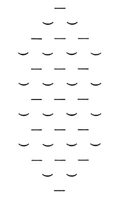

|
Christian Morgenstern: Šibeniční písně
V každém člověku je skryto dítě, to znamená výtvarný pud, a jeho nejmilejší hračkou a předmětem vážného zájmu není miniatura lodi, vypracovaná do nejmenších podrobností, ale ořechová skořápka s ptačím pírkem jako stěžněm a s křemínkem jako kapitánem. Toto dítě chce, aby mu bylo dovoleno spoluhrát, spolutvořit také umění, a nechce být pouhým obdivujícím divákem. Neboť toto „dítě v člověku" je nesmrtelným tvůrcem v lidské duši… Veliké Lalulá Kraklakvakve? Koranere! Ksonsirýři – guelira: Brifsi, brafsi; gutužere: gasti, dasti kra... Lalu lalu lalu lalu la! Chandraradar sísajádra tesku tes py pi? Vahapádra, pryvešádra klukpukpici li? Lalu lalu lalu lalu la! Sochoškrt sic kalcisumpa senmemysagart (;)! Biboň sod: Quocitem Vumpa Kleso Klaso Klart (!) Lalu lalu lalu lalu la! Noční rybí zpěv  Trychtýře
Dva trychtýře jdou noční tmou. Pampevlk Tygrhart Plazoret Děsnýš císařský Sýdřeň koprsa Brejmyslivec Dědkučka maršál Kudyzík krkonošský Kotrok říční Bědava Žrahlt Pětikráska Moudiloďka Lenostoj čtyřprstý Protilička rolní Štikaď samice Brskonopí Ránocel menší Vidamýžď Škrvrána Seloká rybničná Chahája potoční Slepavka Kuklava Kožál Červenín Ekzémník Mokrk Mžikev Ostřída Kuřenka Koleno Koleno samo světem jde. Jen koleno, víc nic. Není to strom! Stan taky ne! Jen koleno, víc nic. Ve válce byl kdys jeden muž prostřílen sem a tam. Jen koleno, jak svatostan, nechytlo ani šrám Od těch dob samo světem jde. Jen koleno, víc nic. Není to strom, stan taky ne! Jen koleno, víc nic. Košilela Znáš sirou košileli? Třepetatá, třepetatá. Jsi proklat, majiteli! Třepetatá, třepetatá. Teď třeská a pleská v ní vánek. Vichrůrej, vichrůrej. Kvílivá jak uplakánek. Vichrůrej, vichrůrej. Docela osiřela košilela. Jak si šibeniční dítě zapamatuje jména měsíců Sněden úhoř. Vezem buben. Svět ten čert vem! Na věnec lupen. Lháři, lži jen! Tys dopad! Blázinec. |